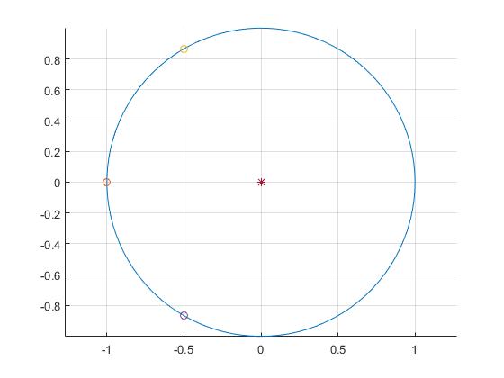
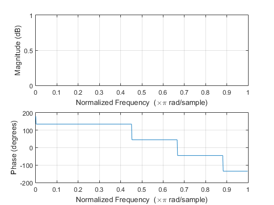
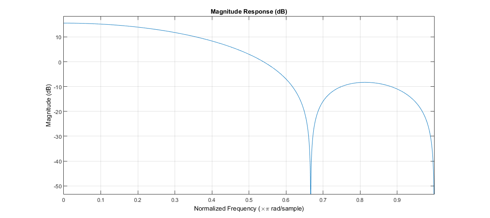

FIR Filter Classifier Type B
Contents
- Linear Phase FIR Filter
- Initialization for TYPE A Filter
- Transfer function in Z domain
- For Type A Filter
- Developer's Mode
- Generating Poles for Linear FIR Filter
- Flags to declare type of system.
- Global Variable Declaration
- Geting Transfer Function h(n)
- If ODD
- IF even
- Final OUTPUT
- Graph Plot in Z domain
- Reuired Responses
- Function Termination
- Author: Kaustubh Shivdikar
Linear Phase FIR Filter
The Discrete FIR Filter block independently filters each channel of the input signal with the specified digital FIR filter. The block can implement static filters with fixed coefficients, as well as time-varying filters with coefficients that change over time. You can tune the coefficients of a static filter during simulation. This block filters each channel of the input signal independently over time. The Input processing parameter allows you to specify whether the block treats each element of the input as an independent channel (sample-based processing), or each column of the input as an independent channel (frame-based processing). To perform frame-based processing, you must have a DSP System Toolbox™ license. The output dimensions equal those of the input, except when you specify a matrix of filter taps for the Coefficients parameter. When you do so, the output dimensions depend on the number of different sets of filter taps you specify.
Initialization for TYPE A Filter
clear all
clc
Transfer function in Z domain
This input will be received from the user end.
For Type A Filter
num = [ 1 2 2 1];
Developer's Mode
dmode = 1;
Generating Poles for Linear FIR Filter
[~,k] = size(num); den(1) = 1; for i=2:k den(k) = 0; end n_roots = roots(num); d_roots = roots(den); [number_of_coefficients, ~] = size(d_roots); number_of_coefficients = number_of_coefficients + 1; noc = number_of_coefficients;
Flags to declare type of system.
flag_A = false; flag_B = false; flag_C = false; flag_D = false; flag_sym = 1;
Global Variable Declaration
check_sym(1) = 100; if (rem(noc,2) == 1) %% ODD Coeffs flag_A = true; flag_C = true; else %% Even Coeffs flag_B = true; flag_D = true; end
Geting Transfer Function h(n)
if (flag_A == true)
If ODD
if (dmode) disp('KTB ODD') end h = num; [~,n] = size(h); N = n; n = n - 1; n = n/2; for i = 1:n if (h(i) == h(N+1-i)) if (dmode) disp('KTB SYMM'); end check_sym(i) = 1; flag_sym = flag_sym * 1; else if (h(i) == (-1 * h(N+1-i))) flag_sym = flag_sym * -1; check_sym(i) = -1; if (dmode) disp('KTB ANTI SYMM'); end else flag_sym = 0; if (dmode) disp('KTB Nothing'); end end end end if (check_sym(1)>0) flag_C = false; else flag_A = false; end
else
IF even
if (dmode) disp('KTB EVEN') end h = num; [~,n] = size(h); N = n; n = n/2; for i = 1:n if (h(i) == h(N+1-i)) if (dmode) disp('KTB SYMM'); end check_sym(i) = 1; flag_sym = flag_sym * 1; else if (dmode) disp('KTB Reached') end if (h(i) == (-1 * h(N+1-i))) flag_sym = flag_sym * -1; check_sym(i) = -1; if (dmode) disp('KTB ANTI SYMM'); end else flag_sym = 0; if (dmode) disp('KTB Nothing'); end end end end if (check_sym(1)>0) flag_D = false; else flag_B = false; end
KTB EVEN KTB SYMM KTB SYMM
end [~, lc] = size(check_sym); lfir = 1; for p = 1:(lc-1) if (check_sym(p) ~= check_sym(p+1)) lfir = lfir *0; end end
Final OUTPUT
Answers
if (lfir) if (flag_A) disp('Given Filter classified as type: A') end if (flag_B) disp('Given Filter classified as type: B') end if (flag_C) disp('Given Filter classified as type: C') end if (flag_D) disp('Given Filter classified as type: D') end else disp('NOT A LINEAR FINITE IMPULSE RESPONSE FILTER!') end
Given Filter classified as type: B
Graph Plot in Z domain
figure(); r = 1; xc = 0; yc = 0; grid on hold on theta = linspace(0,2*pi); x = r*cos(theta) + xc; y = r*sin(theta) + yc; plot(x,y) [l1, ~] = size(n_roots); [l2, ~] = size(d_roots); for i=1:l1 plot(real(n_roots(i)),imag(n_roots(i)),'o'); end for i=1:l2 plot(real(d_roots(i)),imag(d_roots(i)),'*'); end axis equal equity = 0; equity_num = 0; equity_den = 0; %syms z; w = 1:180; x = cos((w*pi)/180) + i*sin((w*pi)/180); z = x; for k = 1:(l1) %disp('KTB'); equity_num = equity_num + z.^k * num(l1 - k + 1); end equity_num = equity_num + num(l1+1); for m = 1:(l2) equity_den = equity_den + z.^m * den(l2 - m + 1); end equity_den = equity_den + den(l2+1); equity = equity_num / equity_den;
Reuired Responses
figure(); freqz(n_roots,d_roots); figure(); fvtool(num); 
Function Termination
disp ('Function Termination'); % end
Function Termination
Author: Kaustubh Shivdikar
MATLAB Lab experiment of FIR Filter Classifier.